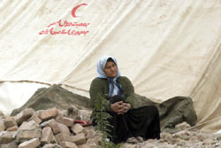
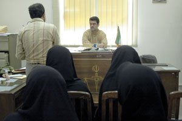
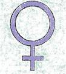
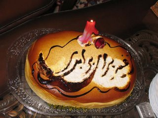
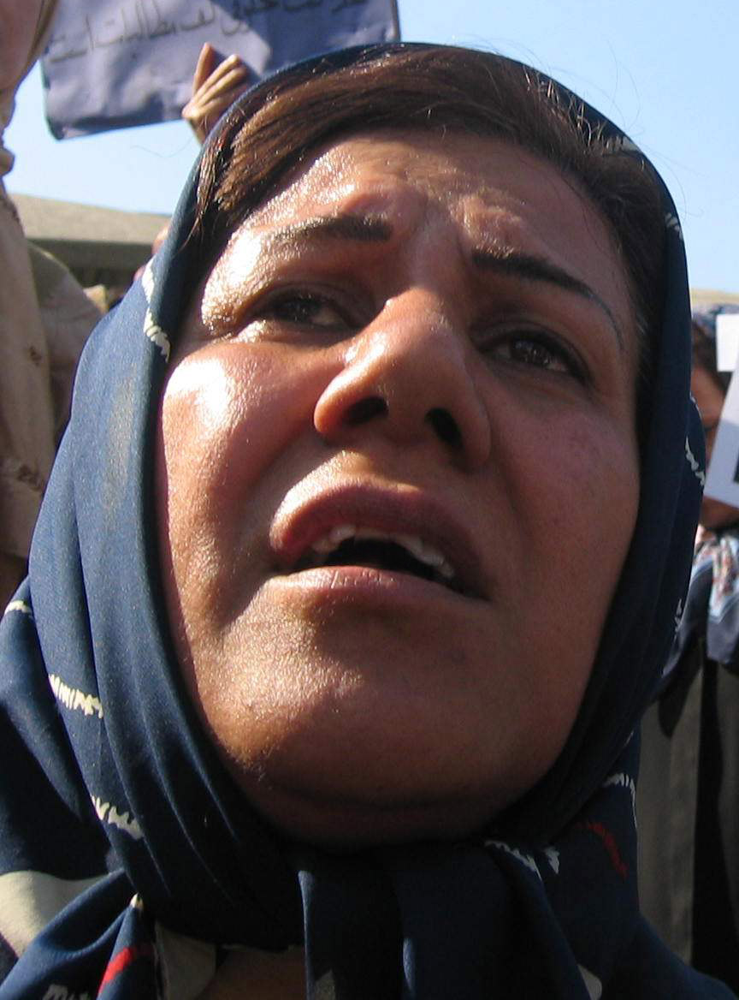
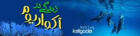
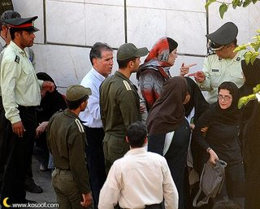
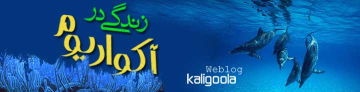
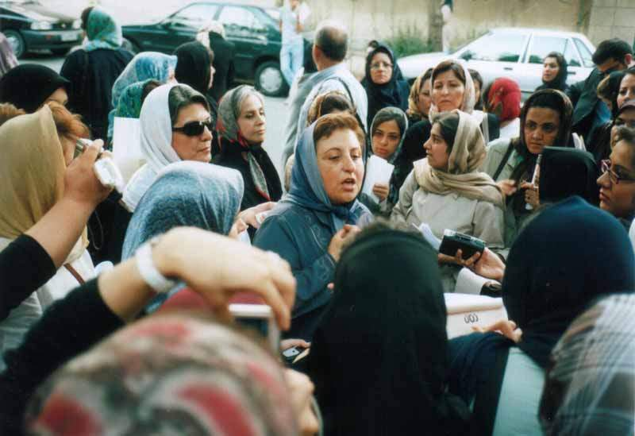

مقالههاى اين بخش
- 21 شهریور 1386

- 20 شهریور 1386

- 19 شهریور 1386
- 18 شهریور 1386

- 17 شهریور 1386

- 16 شهریور 1386

- 15 شهریور 1386

- 14 شهریور 1386

- 14 شهریور 1386

- 12 شهریور 1386

- 12 شهریور 1386

- 11 شهریور 1386

- 10 شهریور 1386

- 8 شهریور 1386
- 7 شهریور 1386

- 6 شهریور 1386

- 2 شهریور 1386
عشرت عبدالهي
- 29 مرداد 1386

- 27 مرداد 1386
- 26 مرداد 1386

- 25 مرداد 1386
- 24 مرداد 1386
- 22 مرداد 1386
- 20 مرداد 1386

- 19 مرداد 1386

- 18 مرداد 1386
- 17 مرداد 1386
- 16 مرداد 1386
- 15 مرداد 1386

- 14 مرداد 1386
| ... | | | | | 2010 | | | | | ... |